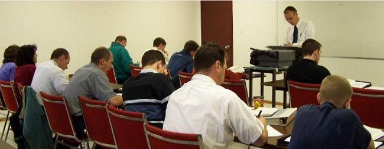
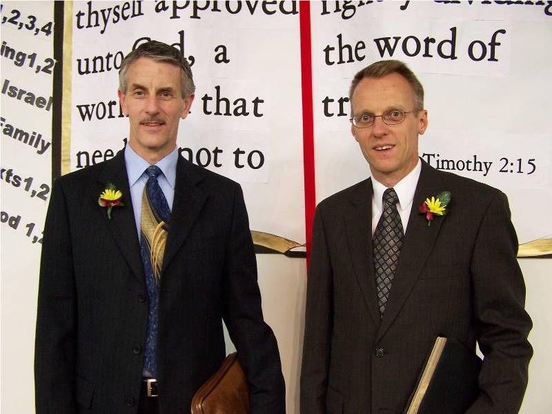
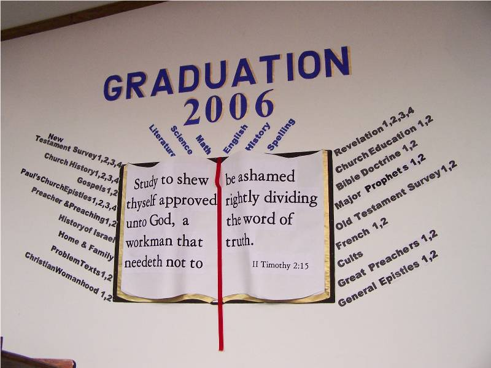
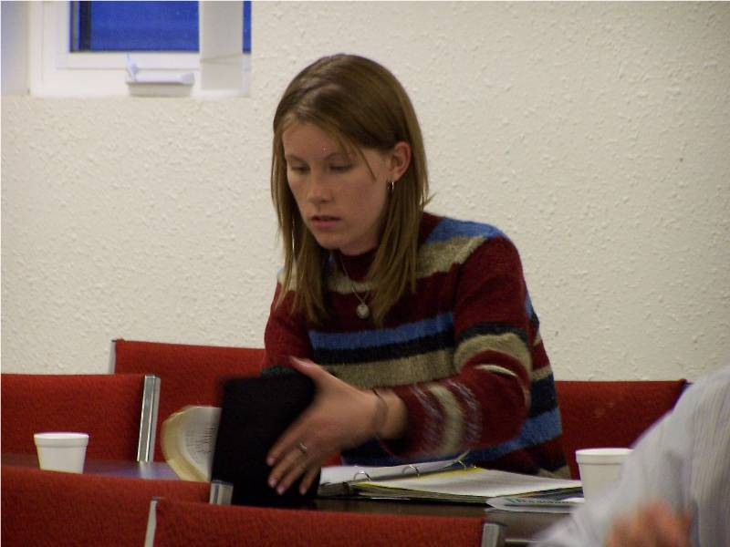
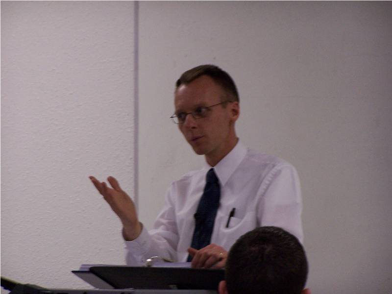

<section class="container-fluid section-space section-bg-1 regular-paragraph-padding">
    <div class="container"><h1 class="center">Bible Institute</h1>
        <div class="center no-fs underline-bottom">
            
        </div>

        <div class="row">

            <div class="col-md-8">
                <p>In obedience to the Bible's mandate for every church to disciple its own people (Matt.28:19-20; 2Tim.2:2,15), and for the purpose of better equipping our own people for future ministry … we began the Golden Plains Baptist Bible Institute in September of 2002.</p>

                <p class="center"></p>

                <p>This 4-year course of in-class studies (coupled with church responsibilities and evangelistic outreach) has been a great benefit to many of our people.  Taught on Tuesday evenings from 6:00 - 10:00 pm, we cover the following subjects:</p>

                <h2>Bible Doctrines 1 & 2</h2>
                <p>An examination of the Doctrines of God, Christ, Heaven, Hell, Angels, Satan & Devils, Man, Sin, The Church, and Last Things.<br>
                Taught in 28 weeks, and includes 23 weekly Quizzes and 2 Final Exams.</p>

                <h2>Bible Terminology 1</h2>
                <p>A study of the definitions of 130 difficult words in our KJB, as well as a look at 24 misunderstood Bible doctrines (as a-millennialism, apostasy,  apostolic signs, Calvinism, and the ecumenical movement).<br>
                Taught in 15 weeks, and includes 12 weekly Quizzes and 1 Final Exam.</p>

                <h2>Book of Acts 1</h2>
                <p>A quick overview of the 28 chapters of Acts … noticing the transitional nature of this book.<br>
                Taught in 14 weeks, and includes 12 weekly Quizzes and 1 Final Exam.</p> 

                <h2>Book of Revelation</h2>
                <p>A study of the 22 chapters of Revelation.<br>
                Taught in 93 weeks, and includes 9 quizzes and 1 Final Exam.</p>

                <h2>Church Education 1 & 2</h2>
                <p>The practical "nuts and bolts" of operating a church (soulwinning, advertising, visitors, altar work, finances, missionaries, business meetings, church-planting procedures, deputation,  weddings, funerals, counseling, church discipline,  and Baptist distinctives.<br>
                Taught in 28 weeks, and includes 24 weekly Quizzes and 2 Final Exams.</p>

                <h2>Church History 1, 2, 3 & 4 </h2>
                <p>A study of Church History from the time of the book of Acts until the present day.  CH4 includes DVD's of many of the Reformers.<br>
                Taught in 56 weeks, and includes 40+ weekly quizzes and 4 Final Exams.</p>

                <h2>General Epistles 1, 2, & 3</h2>
                <p>A study of Hebrews, James, 1 & 2 Peter, 1 & 2 & 3 John.<br>
                Taught in 42 weeks, and includes 39 weekly quizzes and the 3 Final Exams.</p>

                <h2>Gospels 1 & 2</h2>
                <p>A study of the highlights of Matthew 1:1 thru John 8:32.<br>
                Taught over 28 weeks, and includes 25 weekly quizzes and 2 Final Exams.</p>

                <h2>Home & Family </h2>
                <p>A study that includes raising children, courtship, weddings, marriage.<br>
                Taught in 83 weeks, and includes 10 quizzes and 1 Final Exam.</p>

                <h2>Major Prophets 1 & 2</h2>
                <p>A study of Isaiah, Jeremiah, Lamentations & Ezekiel<br>
                Taught in 28 weeks, and includes 24 weekly quizzes and 2 Final Exams.</p>

                <h2>Minor Prophets 1 & 2</h2>
                <p>A study of all 12 Old Testament Minor Prophetical books (Hosea - Malachi)<br>
                Taught in 28 weeks, and includes 22 weekly quizzes and 2 Final Exams.</p>

                <h2>Old Testament History 1 & 2</h2>
                <p>A survey of the books of Genesis through 1 Kings (Solomon's Reign).<br>
                Taught in 28 weeks, and it includes 23 weekly quizzes and 2 Final Exams.</p>

                <h2>Paul's Church Epistles 1, 2, 3, & 4</h2>
                <p>A study of the highlights of Romans through Titus.<br>
                Taught in 56 weeks, and includes 50 weekly quizzes and 4 Final Exams.</p>

                <h2>Preacher & Preaching 1 & 2</h2>
                <p>A study of the philosophy of preaching, as well as the assembling and delivering of a message.<br>
                Taught in 28 weeks, and includes 25 weekly quizzes and 2 Final Exams.</p>

                <h2>Problem Texts 1 & 2</h2>
                <p>A study of 128 standard examples of where the critics say the King James Bible is "full of errors", and resolutions for each of them.<br>
                Taught in 28 weeks, and it includes 24 weekly quizzes and 2 Final Exams.</p>

                <h2>The Bible Issue</h2>
                <p>A brief study answering which Bible is God's Preserved Word today.<br>
                Taught over 10 weeks.  Has no quizzes and no final exam.</p>

                <h2>Bible Geography & Chronology 1 & 2</h2>
                <p>This study locates the vast majority all of cities, countries, watercourses, journeys & events (mentioned systematically through the Bible) on today's maps & charts.<br>
                Taught over 28 weeks, and it includes 26 weekly quizzes and 2 Final Exams.</p>

                <h2>Bible Hermeutics 1 & 2</h2>
                <p>This study introduces the student to basic Bible study tools, Manuscript Evidence for our KJV position, and explains the 22 Laws of Bible Interpretation.<br>
                Taught over 28 weeks, and it includes 23 weekly quizzes and 2 Final Exams.</p>

                <h2>Book of Job</h2>
                <p><a href="https://archive.org/search?query=gpbc%2C+Book+Of+Job%2C+Pastor+Rob+Carlson&sort=publicdate">Audio available here.</a></p>
            </div>

            <div class="col-md-4">
                <p></p>
                <p></p>
                <p></p>
                <p></p>
                <p></p>
                <p></p>
                <p></p>
                <p></p>
            </div>
            
        </div>
    </div>
</section>


